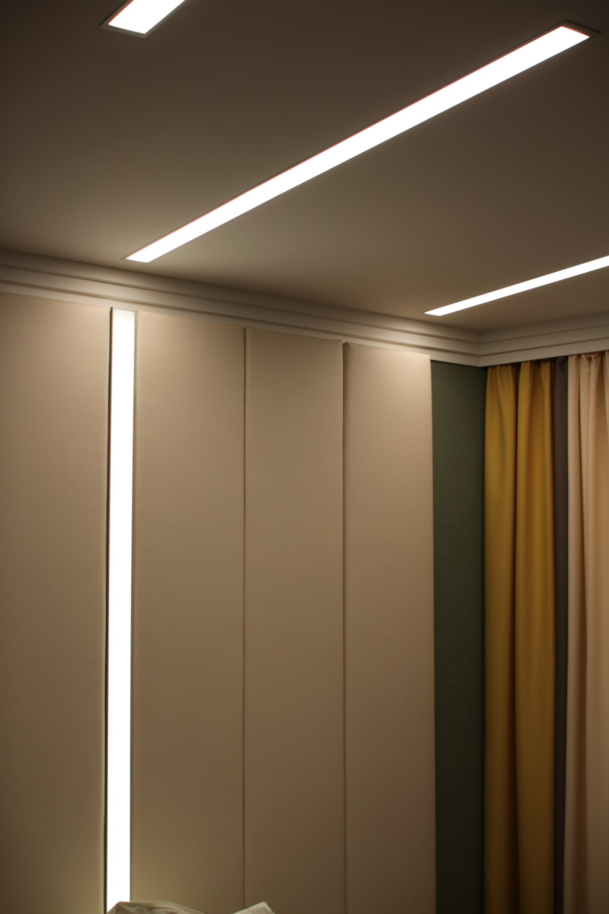
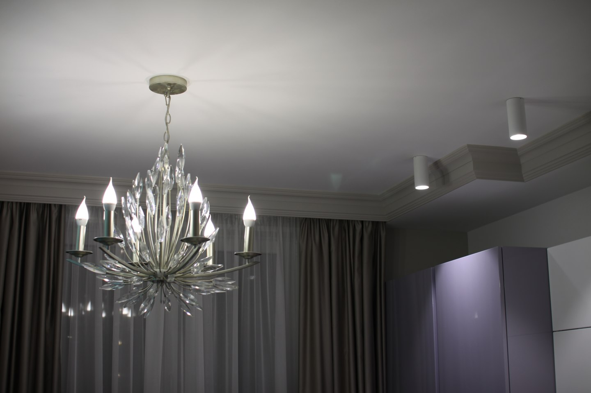

Aqara
Для понятного старта: датчики, свет и бытовые сценарии. Особенно когда важно учитывать готовую отделку.
Разобрать вариант ↗Главная / Умный дом
Умный дом
Начинаем с нужных действий, а затем выбираем оборудование и способ подключения. Электрика и управление проектируются вместе.
Архитектура управления
Проверяем совместимость, способы управления и стадию ремонта. Универсального комплекта для всех объектов нет.
Aqara
Для понятного старта: датчики, свет и бытовые сценарии. Особенно когда важно учитывать готовую отделку.
Разобрать вариант ↗Wiren Board
Для проводной автоматизации, управления климатом и согласованной логики инженерных систем.
Разобрать вариант ↗iRidi
Для сценариев и визуального управления совместимым оборудованием через единый интерфейс.
Разобрать вариант ↗Алиса — один из возможных способов управления, а не замена инженерной архитектуры. Интеграцию и доступные команды проверяем для выбранного состава.
Проверяем модель хаба, устройства, покрытие связи и поддержку конкретных локальных сценариев. Для готовой отделки учитываем доступное питание и проводку.
Согласуем проводную инфраструктуру, модули и управление климатом. Необходимые функции, резерв и поведение при отказах определяет проект.
Подбираем совместимые устройства, средства исполнения логики и визуальное управление. Лицензии, панели и интерфейс уточняются отдельно.
Дом в повседневной жизни
Примеры возможных сценариев. Конкретные функции зависят от состава оборудования и проекта.
Пример сценария / свет
Рабочий свет для дел, мягкий — для отдыха. Один сценарий может менять несколько групп одновременно.

Освещение в интерьере

Рабочий, общий и декоративный свет можно обсудить вместе с логикой управления.
На фотографии — пример освещения. Нужные сценарии, совместимость и способы управления согласуем под Ваш объект.
Понятный процесс
Понимаем объект, задачу и стадию ремонта.
Согласуем границы работ и исходные данные.
Фиксируем состав, точки и логику управления.
Создаём кабельную инфраструктуру по проекту.
Получаем согласованное распределение и автоматику.
Проверяем подключения и согласованные сценарии.
Разбираем управление, документацию и дальнейшие обращения.
Состав этапов и результаты приёмки закрепляем для конкретного объекта. Сборка щита может идти параллельно монтажу.
После запуска
Обязательства и порядок обращения фиксируются в договоре. Платное сопровождение не является условием исправления гарантийных дефектов.
Новые сценарии, расширение и выезды согласуются отдельно. Состав услуги, сроки реакции и стоимость определяются для конкретной системы.
Работаем с системами, установленными VlasovTech. Публичные тарифы сопровождения и круглосуточный SLA не утверждены.
Передача системы
До начала работ согласуем комплект передачи под выбранную систему.
Это предлагаемый чек-лист передачи. Точный состав файлов, доступов и прав фиксируется в договоре и зависит от платформы.
Надёжность и управление
Локальные сценарии могут работать без внешнего интернета, если это поддерживают выбранные устройства и архитектура. Удалённый доступ и облачные функции зависят от соединения. Проверяем каждый нужный сценарий для конкретного состава.
Функции сетевых устройств зависят от питания. Резервирование и поведение после восстановления обсуждаем отдельно и проверяем при запуске. Без согласованной схемы не обещаем работу всей системы при отключении электричества.
Возможность и способ подключения зависят от выбранных модулей и схемы. Физическое управление обсуждаем на этапе проекта; для готовой отделки отдельно проверяем существующую проводку.
Возможность расширения зависит от резерва кабелей, места в щите, совместимости и лицензий. Будущие функции лучше перечислить до монтажа, чтобы заложить инфраструктуру.
Он показывает ориентиры «от» для работ, черновых материалов и базовой автоматики стартового этапа. Чистовые устройства, датчики, приводы, панели, интерфейсы и финальная комплектация требуют отдельного расчёта.
Сопровождение относится к собственным системам VlasovTech. Состав задач, время реакции, выезды и стоимость согласуются отдельно. Утверждённого публичного тарифа и обещания 24/7 сейчас нет; гарантийные вопросы рассматриваются по договору.
Обсудить объект
Квартира или частный дом, стадия ремонта и нужные функции — начнём с этих данных.
В VK и MAX вставьте подготовленный текст вручную.
Если удобнее позвонить: +7 (910) 007-17-27